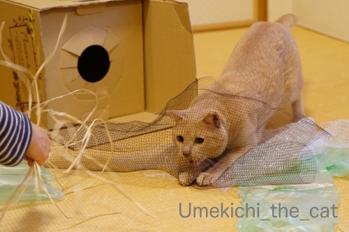
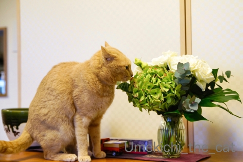
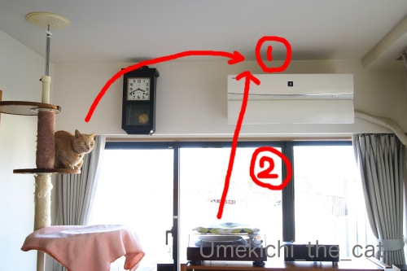
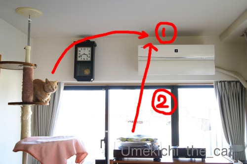

お花見はじめはコシノヒガンから [梅吉]
3月21日、今年も早咲きのコシノヒガンを見に行ってきました。
３連休が始まる前、大阪のソメイヨシノの開花予想は23日からの週のいずれかの日、
と言われていました。
それなら早咲きの桜はすでに満開でしょう？と思って出かけたのですが・・・・・

ユキヤナギは凶暴なくらい咲き誇ってましたが桜は全然満開じゃなかったですw
出かけたのは大阪府内狭山市にある狭山池公園。
日本最古と言われる大きなため池の周りに桜が植えられているのですが
水面を渡る冷たい風が吹き付ける場所にある木は咲くのが遅い模様。
品種や環境もそれぞれの桜の開花を読むのは本当に難しい＞＜
でも！見る位置を変えたら見応え十分。
桜を愛でながら持参したお寿司を楽しんできました＾＾
人出もそこそこで快適なお花見でした。
ここは提灯を下げたり音楽を流したりしないのが最高です。
もちろんBBQで宴会する様な人もいません。
お花見は静かにしたいです(^_－)☆
＊＊＊＊＊＊＊＊＊＊＊＊＊＊＊＊＊＊＊＊＊＊＊＊＊＊＊＊＊＊＊＊＊＊＊＊
梅吉さんもベランダでお花見です。
ユキヤナギを楽しみ・・・お、これは香を聞く「道」でもありますね＾＾
長寿梅（ボケの一種です）と梅梅ツーショット。

と思ったらここでも「道」。
毛繕いも「道」なんだとつい最近すももちゃんに教えてもらいました( ´艸｀)
梅吉は足を上げる流派の様ですwww
プランター菜園の管理にも尽力していらっしゃいます＾＾
後ろ右は玉ねぎ。左はいちご。
いちごは小さな実がなり始めてます。

忙しい梅吉さんw
右後ろはパセリと三つ葉。
パセリって不味いものと思っていましたが
採りたてはパサパサしていないしエグくなくて美味しいのです。
左は紫アスパラです。
ぐんぐん伸びてます！
すでに５、６本収穫しました。甘くて本当に美味しい。
買ったアスパラの味がことさら薄く感じます。
前記事でちらりと書いたベランダのプチリフォーム。
梅吉の後ろに写っている白い脱走防止ガードを付け替えること。
変色して写真に写るたび美しくない・・・と思っていたので
黒いガードに付け替えることにしました。
急ぐことでもないのですが夏の灼熱地獄になる前に済ませたいです(≧▽≦)
 ↑ガブッと一押し↑
↑ガブッと一押し↑
３連休が始まる前、大阪のソメイヨシノの開花予想は23日からの週のいずれかの日、
と言われていました。
それなら早咲きの桜はすでに満開でしょう？と思って出かけたのですが・・・・・
ユキヤナギは凶暴なくらい咲き誇ってましたが桜は全然満開じゃなかったですw
出かけたのは大阪府内狭山市にある狭山池公園。
日本最古と言われる大きなため池の周りに桜が植えられているのですが
水面を渡る冷たい風が吹き付ける場所にある木は咲くのが遅い模様。
品種や環境もそれぞれの桜の開花を読むのは本当に難しい＞＜
でも！見る位置を変えたら見応え十分。
桜を愛でながら持参したお寿司を楽しんできました＾＾
人出もそこそこで快適なお花見でした。
ここは提灯を下げたり音楽を流したりしないのが最高です。
もちろんBBQで宴会する様な人もいません。
お花見は静かにしたいです(^_－)☆
＊＊＊＊＊＊＊＊＊＊＊＊＊＊＊＊＊＊＊＊＊＊＊＊＊＊＊＊＊＊＊＊＊＊＊＊
梅吉さんもベランダでお花見です。
ユキヤナギを楽しみ・・・お、これは香を聞く「道」でもありますね＾＾
長寿梅（ボケの一種です）と梅梅ツーショット。
と思ったらここでも「道」。
毛繕いも「道」なんだとつい最近すももちゃんに教えてもらいました( ´艸｀)
梅吉は足を上げる流派の様ですwww
プランター菜園の管理にも尽力していらっしゃいます＾＾
後ろ右は玉ねぎ。左はいちご。
いちごは小さな実がなり始めてます。
忙しい梅吉さんw
右後ろはパセリと三つ葉。
パセリって不味いものと思っていましたが
採りたてはパサパサしていないしエグくなくて美味しいのです。
左は紫アスパラです。
ぐんぐん伸びてます！
すでに５、６本収穫しました。甘くて本当に美味しい。
買ったアスパラの味がことさら薄く感じます。
前記事でちらりと書いたベランダのプチリフォーム。
梅吉の後ろに写っている白い脱走防止ガードを付け替えること。
変色して写真に写るたび美しくない・・・と思っていたので
黒いガードに付け替えることにしました。
急ぐことでもないのですが夏の灼熱地獄になる前に済ませたいです(≧▽≦)
最高到達点 [梅吉]
ぐんぐんのびーる梅吉！

金曜日は風に吹かれながらテクテク歩いて厄除けのお参りをして
いつも行列のお店に並ばずに入店してヘヴィメタルを聴きながら坦々麺を食べたり
そのスープにご飯を入れてしまう暴挙に出て（お茶碗小盛りごはんをおっとと半分こですよ！）
ああーー！！炭水化物過多だけど全然後悔してない美味しかったんだものーと思ったり。
土曜日は早咲きのコシノヒガンを見に行って
全体的に５部咲きの桜をみながら大起水産（関西限定ネタ！？）で買ったお寿司でお外ランチして
ソメイヨシノが記録的に早い開花になりそうだからと言って
早咲きの桜が早く咲くとは限らないことに気づいたり
ベランダのプチリフォームのために資材を買いに行ったり。
今までスルーしてた近所の商店街のお肉屋さんのお安い切り落とし牛肉が
めっちゃ美味しいことに気づいたお夕食だったり。
最終日は二日間サボってたことをあれこれ片付けたり梅吉のお世話にいそしんだり。
連休中の三日間、PCの前に座る時間があまり取れなかったです。
ご訪問を失礼していた皆様のところへは今日から伺わせていただきますねm(_ _)m
申し訳ない様な手抜き記事ですがコメント欄は空けておきまーす (≧▽≦)
（なのでコメントはお気になさらずに！）
↑ガブッと一押し↑
金曜日は風に吹かれながらテクテク歩いて厄除けのお参りをして
いつも行列のお店に並ばずに入店してヘヴィメタルを聴きながら坦々麺を食べたり
そのスープにご飯を入れてしまう暴挙に出て（お茶碗小盛りごはんをおっとと半分こですよ！）
ああーー！！炭水化物過多だけど全然後悔してない美味しかったんだものーと思ったり。
土曜日は早咲きのコシノヒガンを見に行って
全体的に５部咲きの桜をみながら大起水産（関西限定ネタ！？）で買ったお寿司でお外ランチして
ソメイヨシノが記録的に早い開花になりそうだからと言って
早咲きの桜が早く咲くとは限らないことに気づいたり
ベランダのプチリフォームのために資材を買いに行ったり。
今までスルーしてた近所の商店街のお肉屋さんのお安い切り落とし牛肉が
めっちゃ美味しいことに気づいたお夕食だったり。
最終日は二日間サボってたことをあれこれ片付けたり梅吉のお世話にいそしんだり。
連休中の三日間、PCの前に座る時間があまり取れなかったです。
ご訪問を失礼していた皆様のところへは今日から伺わせていただきますねm(_ _)m
申し訳ない様な手抜き記事ですがコメント欄は空けておきまーす (≧▽≦)
（なのでコメントはお気になさらずに！）
猫関所の水際？対策 [梅吉]

隠す様にしながら実はお鼻をちらりと見せていたり
隠れる様にしながら実はじっと下僕を見ていたり( ´艸｀)
のんびり過ごしている様に見える梅吉さんですがやる時はやる！
（22秒 音は出ません＾＾）
我が家の水際対策はバッチリです (≧▽≦)
＊＊＊＊＊＊＊＊＊＊＊＊＊＊＊＊＊＊＊＊＊＊＊＊＊＊＊＊＊＊＊＊＊＊＊＊＊＊＊＊
糖質制限しているわけでは無いのですが興味があって食べてみた。
「カリフラワーライス」

カリフラワーの房の部分を細かく切ってご飯に見立てた冷凍食品。
味はそのものはズバリ、カリフラワーですw
カレーのご飯に代用したのですが違和感なく食べられました＾＾
炭水化物過多だよねと思った時の罪悪感軽減にいかがでしょう。
なんとなく似ているフタリ [梅吉]
右足、みょ〜ん

左足、みょ〜ん

両足で！

全身で！！

なんとなく似てませんか( ´艸｀)
（既出ネタですがお気に入りなので再登場しちゃった）
とても似ていませんか？ (≧▽≦)
この羊さんは我が家から程近いところにある老舗洋菓子店のマスコット＾＾
で、このお店から泳いできたものがw

アップルパイ ならぬ アップル・タイ。
折角なのでアップルマウスを大きさ比較においてみた。
目がちゃんと出てて「めでたい」www
バレンタインのお返しです＾＾
以前は2017年にも泳いできているので３年ぶりです＾＾
スタッフに「大きい方ですか？小さい方ですか？」と聞かれて
大小の二種類があったことに気づいたと言う(⌒-⌒;
スモールサイズは二等分して食べきりサイズ（我が家にとっては）でちょうど良かったです。
にしてもここのアップルパイは美味しいなぁ♡
＊＊＊＊＊＊＊＊＊＊＊＊＊＊＊＊＊＊＊＊＊＊＊＊＊＊＊＊＊＊＊＊＊＊＊＊＊＊＊＊
おっとのテレワーク、今月末までに延長になりました。Wow！！
会社に行かなきゃならないこともある様ですが
横並びの人々を尻目に基本テレワークにするようです。
心優しい奥さんが（爆）流石に「長い！！」と思ったかどうかは内緒ですw
梅吉も忙しい日々が続く！？(＠◇＠)

そんな先週のテレランチ。
賞味期限の近くなりつつある防災食も活用してます。
ごはんはパックのレンチンタイプ（サ◯ウのごはんみたいなの）
これにフリーズドライの牛すきの卵とじを乗せてどんぶりに。
牛すきの卵とじはお湯を入れて30秒くるくる混ぜるだけw
ちょい味が濃いめですがまあまあイケます。
お味噌汁はお湯を入れるだけ。これに常備野菜のサラダでチョー簡単www
あ、丼物の上に乗っているのはプランターで育ててる三つ葉です。
いまもりもり育っているので薬味にいろどりにと大活躍してまーす＾＾
フリーズドライのものって長期保存が効く様に思えますが
以外に賞味期限が短いものが多いんですよね。
物によっては半年とか！！
以前まとめ買いして消費するのに苦労したので買い方に気をつける様にしています。
今週も防災食消費に協力してもらわなきゃ＾＾
わしのおしごと [梅吉]
わし ここんとこ まいにちいそがしいんやで

しつれいやな ほんまに
梅吉、毎日おとーさんのテレワークのお手伝いに励んでます(⌒-⌒;
お昼ご飯が大変かな？と思いましたが前の日の残り物が確実になくなるのが良い！（爆
私一人だと２〜３日食べ続けたものが１日でなくなる。
ワイシャツの洗濯＆アイロンがけをしなくて良いなど楽チンなことも多々。

おっとの休憩時間にはベランダに連れ立って出かけたり（笑
かくれんぼからのー
追いかけっことなかなか楽しそうないっぴきとひとりの愉快な仲間たち、ですwww
で、テレワークなんですが
会社の目的としては
「大規模な感染拡大を防ぐため社員の行動をできるだけ制限し社会の混乱の抑制に協力する。
かつ、大多数の社員がテレワークすることでの問題点を明らかにする。
期間中の業績不振は問題とせず。」
なはずなんですが・・・
半数以上の社員が平時と同じ様に出社しちゃってるんですって。
その理由は会社に行かなければ出来ない仕事がある、だけではないらしい。
「こんなときでも出社してがんばっている」アピール？
「出社している人が多いから自分も行った方が良い」と横並び的な考え？
今の日本の社会だとこうなってしまうのかしら。
会社がのぞましいとか推奨しますと言ってもダメみたいだ
決まりだと言わないと通じないんだな・・・とつぶやくおっとでしたw
＊＊＊＊＊＊＊＊＊＊＊＊＊＊＊＊＊＊＊＊＊＊＊＊＊＊＊＊＊＊＊＊＊＊＊＊＊
前記事、
沢山の「結婚記念日おめでとう」のコメントをありがとうございましたm(_ _)m
感謝を込めて（？）追加画像( ´艸｀)

この穴、顔を出すために作られたとしか思えませんw

楽しいと凶悪顔になる漢、梅吉 (≧▽≦)
タグ：テレワーク
箱と漁網と華麗なヒモと [梅吉]
これ、なーんだ？

予想はしてましたけど興味は箱へ。ねこまっしぐらですよw
吸い込まれていく後ろ姿とあちにはいつも見惚れてしまいます。
そんな猫変態は私だけー！？

楽しそうでなによりです( ´艸｀)

今年はラッピングに使われていた漁網みたいなネットが大ウケ！

わたしのヒモさばきが華麗だ、と自画自賛した一枚。
興奮しすぎて訳がわからなくなって走り去っていくのはいつものことw

落ち着いたところでやっとお花に興味を示しましたよ。
一緒にパチリです＾＾

でもやっぱり興味はヒモ！！
先日、結婚記念日でした。
今の所記念日ディナーなどの予定は立てていません。
世の中が落ち着いたあたりで良いかなって。
あとは普段は買わないお値段のお肉やワインを買ってお家で楽しんでます＾＾

今年も安定の白×グリーンの配色のブーケ。
おっと、ありがとう。
新型コロナウィルス騒動の余波。
楽しみにしていたスーパーラグビー
サンウルブズ vs.ブランビーズ＠花園ラグビー場（３月８日）の試合が
オーストラリアへ会場変更になった。
（６日に試合、そして負けた。涙。サンウルブズなかなか勝てません・・・・・）
３月14日の秩父宮ラグビー場の試合も同様の措置です。
楽しみにしていた方、残念だけど今年はしょうがないですよね・・・一緒に泣こう(꒦ິ⌑꒦ີ)
こんな面白い動画を作った方々が！
映画やドラマのシーンをつなぎ合わせているのかな？
（この際著作権とかそういう話は無しでw）
こんな世の中になりはしないだろうけれど可能性は０%！？とも言い切れないのが怖いwww
聖域よ、さようなら [梅吉]
ばんっ！と聞きなれない音がした。なんだ？なんだ？？
あー！(꒦ິ⌑꒦ີ)
エアコンの上は家の中で梅吉が上がれない（とこの時まで思っていた）唯一の聖域でした。
前々から興味津々なのは分かっていたけど
踏み切る足場の位置が悪い（とこの時まで思っていた）ので無理だと思っていたのにorz

飛んだ瞬間は見ていないのですが・・・
飛ぶちょっと前梅吉を見たのはルート①のタワーのステップの上。
一番上のステップは角度が悪いので多分無理。多分多分多分・・・・・
もう一つ疑わしいのはルート②のレコードプレーヤーからのジャンプ。
②からだと着地点？到達点？が見えないのでやっぱり①のルートかなぁ。
梅吉は鉢の土をほりほりしたい子w
ネコ草の鉢（エアコン上右側にある鉢です）をそのへんに置いておくと大変なことになります。
エアコンの上は暖かくて良く育つし梅吉にいたずらされない最適な場所だったのに。
今後人が家にいる時間は良いけれど出かけるときはいちいち移動させなければなりません(ｰ ｰ;)
で、この場所に上がった梅吉さん大変お困りのご様子です(⌒-⌒;
にゃん生において最大のピンチで緊張！？
お耳が戦闘機耳（by Bossさん）なのは天井に頭がくっつきそうなだけではないはず！
（11秒 音は出ません＾＾）
梅吉の身体能力からするとほっておいても自分で降りられるのですが
降りるのは多分レコードプレーヤーの上。
プラスチックの蓋が割れそうなのでレスキュー隊が出動しましたよ( ´艸｀)
＊＊＊＊＊＊＊＊＊＊＊＊＊＊＊＊＊＊＊＊＊＊＊＊＊＊＊＊＊＊＊＊＊＊＊＊
おひな祭りの日、ことしは何一つ「らしいこと」もせず桜餅すら食べませんでした。
お浸し用に買った菜の花の開き具合が良い感じだったので少しだけ切り花として＾＾
男の子だけど梅吉と一緒にパチリ。
↑ガブッと一押し↑
あー！(꒦ິ⌑꒦ີ)
エアコンの上は家の中で梅吉が上がれない（とこの時まで思っていた）唯一の聖域でした。
前々から興味津々なのは分かっていたけど
踏み切る足場の位置が悪い（とこの時まで思っていた）ので無理だと思っていたのにorz

飛んだ瞬間は見ていないのですが・・・
飛ぶちょっと前梅吉を見たのはルート①のタワーのステップの上。
一番上のステップは角度が悪いので多分無理。多分多分多分・・・・・
もう一つ疑わしいのはルート②のレコードプレーヤーからのジャンプ。
②からだと着地点？到達点？が見えないのでやっぱり①のルートかなぁ。
梅吉は鉢の土をほりほりしたい子w
ネコ草の鉢（エアコン上右側にある鉢です）をそのへんに置いておくと大変なことになります。
エアコンの上は暖かくて良く育つし梅吉にいたずらされない最適な場所だったのに。
今後人が家にいる時間は良いけれど出かけるときはいちいち移動させなければなりません(ｰ ｰ;)
で、この場所に上がった梅吉さん大変お困りのご様子です(⌒-⌒;
にゃん生において最大のピンチで緊張！？
お耳が戦闘機耳（by Bossさん）なのは天井に頭がくっつきそうなだけではないはず！
（11秒 音は出ません＾＾）
梅吉の身体能力からするとほっておいても自分で降りられるのですが
降りるのは多分レコードプレーヤーの上。
プラスチックの蓋が割れそうなのでレスキュー隊が出動しましたよ( ´艸｀)
＊＊＊＊＊＊＊＊＊＊＊＊＊＊＊＊＊＊＊＊＊＊＊＊＊＊＊＊＊＊＊＊＊＊＊＊
おひな祭りの日、ことしは何一つ「らしいこと」もせず桜餅すら食べませんでした。
お浸し用に買った菜の花の開き具合が良い感じだったので少しだけ切り花として＾＾
男の子だけど梅吉と一緒にパチリ。
ご一緒に朝寝はいかが？ [梅吉]


という朝8時。
こんなん見ていると脱力しかありません (⌒-⌒;
一緒に朝寝？流石にしたことはありませんよ。してみたいなー！！

雨上がりの翌日はこんな感じw
＊＊＊＊＊＊＊＊＊＊＊＊＊＊＊＊＊＊＊＊＊＊＊＊＊＊＊＊＊＊＊＊＊＊＊＊＊
おっとが今月２日（今日ですね）から２週間テレワークになりました。
もちろん新型コロナウィルスの感染対策措置です。
通勤手段や職場の立地からみてウィルスをもらってくる確率が断然高いのはのはおっとだな、
と思っていたのでしばしの間ホッと出来そう。
で、テレワークってずーっとお家にいるのでお休みと感じてしまいそうw
本人も「メリハリつけるのが大変そうだ・・・」と呟いております。
とりあえずお昼にビールは飲まない様にって釘は刺しておきました(⌒-⌒;
あとはweb会議に梅吉が参加しない様にも気を付けなければwwwww
私は毎日のお昼ご飯の用意をどうしようと悩めるおばちゃんです。。。
だから用意が遅くなる [梅吉]
キッチンの入り口でおかーさん待ち構える梅吉さん。

![[猫]](https://blog.ss-blog.jp/_images_e/101.gif) ごはんのじかんやで
ごはんのじかんやで
おかーさんの足に全力アピール！！
さっ こっちでちゃっちゃと よういしてや
と誘導されます。
ごはんの用意が出来るまでの約4分を４倍速にしてみました。
（32秒 音は出ません＾＾ ちょっとめまぐるしいかもw）
ご飯の用意、ご飯後に飲む白湯やお薬も用意しなければならないので
（梅吉はお薬が必要な子です）
皆さんのお家の子のご飯の用意よりも時間がかかっているかも。
それに！梅吉が動画に写ってない時は
キッチンカウンターの上で私の目の前を行ったり来たり・・・・・
私の顔の方にお尻を向けたまま立ち止るので手元が見えなくて全然用意が捗りませんw
時間の半分くらいは梅吉のおちりを「見せられてる」かも(｡-_-｡)
「よ〜け〜て〜よぉ」
「おちりしか見えませんよー♡」
と言っている時間は楽しくもありますが
大人しく座って待っててくれたらちゃっちゃと用意できるのに、とも思うのでありますw
＊＊＊＊＊＊＊＊＊＊＊＊＊＊＊＊＊＊＊＊＊＊＊＊＊＊＊＊＊＊＊＊＊＊＊＊＊＊＊＊＊＊＊
今年もこの季節がやってきました。
我が家の近くの大きな神社は大相撲大阪場所中立浪部屋の宿舎になっているのです。
朝稽古が終わった後の土俵。

いつも浴衣のお相撲さん＾＾
びん付け油の香りと沈丁花の香りが漂ってくると「ああ、春だ」と思います。
で、毎年行っている大阪場所なんですが今年は希望日のチケットが取れませんでした。
（チケットが売り出されたのは新型肺炎が大きな騒ぎになる前。）
残念ですけど今年に限っては取れなくてよかったかなぁとちょっとホッとしています。
たくさんの人が集まる密閉空間・・・感染の不安がよぎって心から楽しめないかも。
昨日のニュースでは無観客興行、場所中止の可能性もなんてニュースになっていました。
どうなるんでしょう。

もう一つホッとしたこと。
今月末サントリー山崎蒸溜所の有料ツアーに当選していたのですが
（人気でなかなか当選できないのです）
しばらくの間工場見学自体を中止しますと連絡がありました。
山崎蒸溜所があるのは京都。
工場の中は大丈夫だろうけれど彼の地に向かうまでの交通機関に色々懸念が・・・
行こうか？行くまいか？？
行って大丈夫なのか？？？参加する人ってどんな人たちー！？！？など
モヤモヤと考える日々が続いていたので
きっぱりと中止を言い渡されてありがたいなと思ったくらいです。
この先も色々なイベントが中止されそうですね。
昨日大阪で直前になって中止が発表されたコンサートがありましたけど
中止の決定は出来るだけ早めにしてほしいものです。
その点サントリーは、エライ！
↑ガブッと一押し↑
おかーさんの足に全力アピール！！
と誘導されます。
ごはんの用意が出来るまでの約4分を４倍速にしてみました。
（32秒 音は出ません＾＾ ちょっとめまぐるしいかもw）
ご飯の用意、ご飯後に飲む白湯やお薬も用意しなければならないので
（梅吉はお薬が必要な子です）
皆さんのお家の子のご飯の用意よりも時間がかかっているかも。
それに！梅吉が動画に写ってない時は
キッチンカウンターの上で私の目の前を行ったり来たり・・・・・
私の顔の方にお尻を向けたまま立ち止るので手元が見えなくて全然用意が捗りませんw
時間の半分くらいは梅吉のおちりを「見せられてる」かも(｡-_-｡)
「よ〜け〜て〜よぉ」
「おちりしか見えませんよー♡」
と言っている時間は楽しくもありますが
大人しく座って待っててくれたらちゃっちゃと用意できるのに、とも思うのでありますw
＊＊＊＊＊＊＊＊＊＊＊＊＊＊＊＊＊＊＊＊＊＊＊＊＊＊＊＊＊＊＊＊＊＊＊＊＊＊＊＊＊＊＊
今年もこの季節がやってきました。
我が家の近くの大きな神社は大相撲大阪場所中立浪部屋の宿舎になっているのです。
朝稽古が終わった後の土俵。
いつも浴衣のお相撲さん＾＾
びん付け油の香りと沈丁花の香りが漂ってくると「ああ、春だ」と思います。
で、毎年行っている大阪場所なんですが今年は希望日のチケットが取れませんでした。
（チケットが売り出されたのは新型肺炎が大きな騒ぎになる前。）
残念ですけど今年に限っては取れなくてよかったかなぁとちょっとホッとしています。
たくさんの人が集まる密閉空間・・・感染の不安がよぎって心から楽しめないかも。
昨日のニュースでは無観客興行、場所中止の可能性もなんてニュースになっていました。
どうなるんでしょう。
もう一つホッとしたこと。
今月末サントリー山崎蒸溜所の有料ツアーに当選していたのですが
（人気でなかなか当選できないのです）
しばらくの間工場見学自体を中止しますと連絡がありました。
山崎蒸溜所があるのは京都。
工場の中は大丈夫だろうけれど彼の地に向かうまでの交通機関に色々懸念が・・・
行こうか？行くまいか？？
行って大丈夫なのか？？？参加する人ってどんな人たちー！？！？など
モヤモヤと考える日々が続いていたので
きっぱりと中止を言い渡されてありがたいなと思ったくらいです。
この先も色々なイベントが中止されそうですね。
昨日大阪で直前になって中止が発表されたコンサートがありましたけど
中止の決定は出来るだけ早めにしてほしいものです。
その点サントリーは、エライ！
そのきもち わかるで！な梅吉 [梅吉]

あんまり居心地よさそうに見えないのにおっとのお膝が好きな梅吉。

おっとがじっとしていると良いのですが
席を立とうとしたりなでなでし始めると変なスイッチが入ります(⌒-⌒;
（15秒 音出ません）
その始まりはこんな感じー！
もちろんジャレてるだけですwww
（10秒 音出ません）
おひざべっどは うごいたらあかん！とお怒りになる猫、に共感する猫、
をじっと見る猫w
今日は手抜き記事ゆえ押し逃げ推奨です(≧▽≦)
コメントお気遣いなくー。
三連休最後の日（お仕事の方はお疲れ様ですm(_ _)m）。
みなさまもごゆるりとお過ごしくださいませ。

カフェオレ色の梅吉

梅吉 2023年8月10日 永眠


梅吉と出会った譲渡会

犬猫の理由なき殺処分ゼロ
妄想広告
UMEKICHI 光

爆発的に早い！
時々攻撃的！
Thanks to Mr.Boss365
爆発的に早い！
時々攻撃的！
Thanks to Mr.Boss365